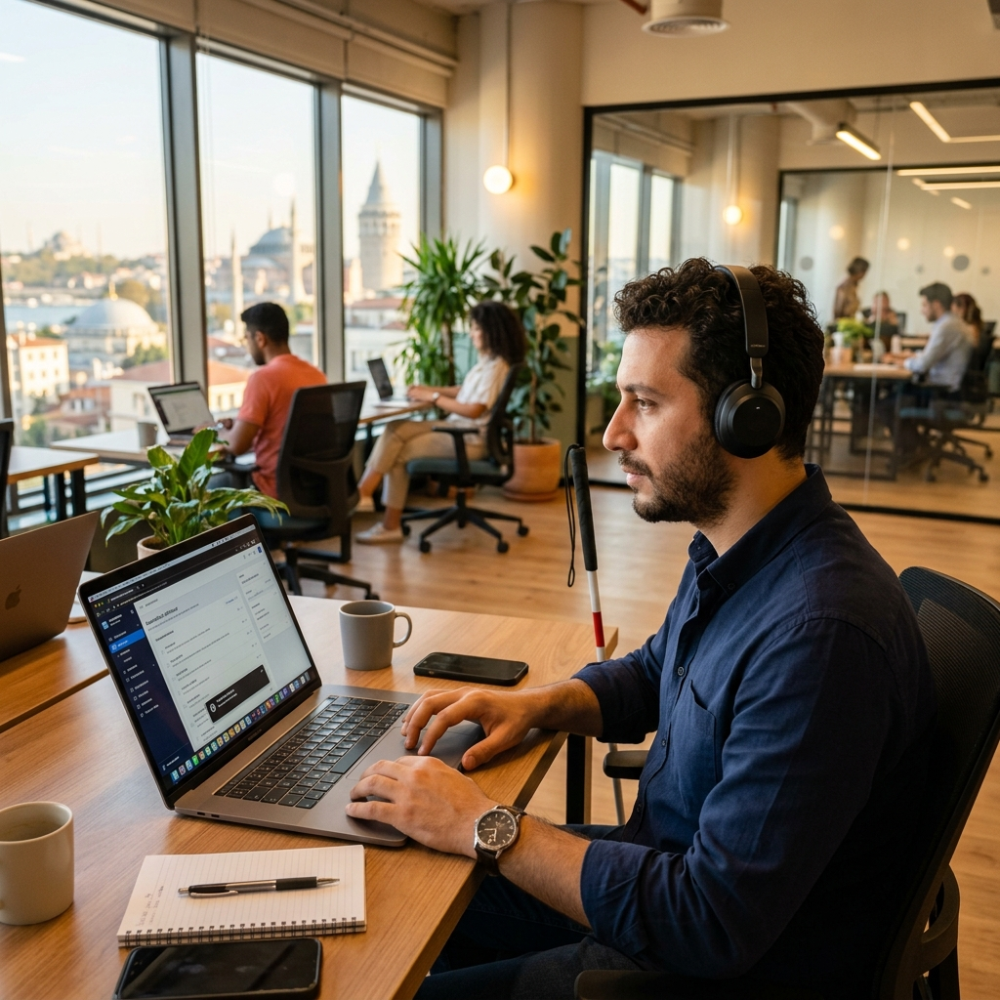
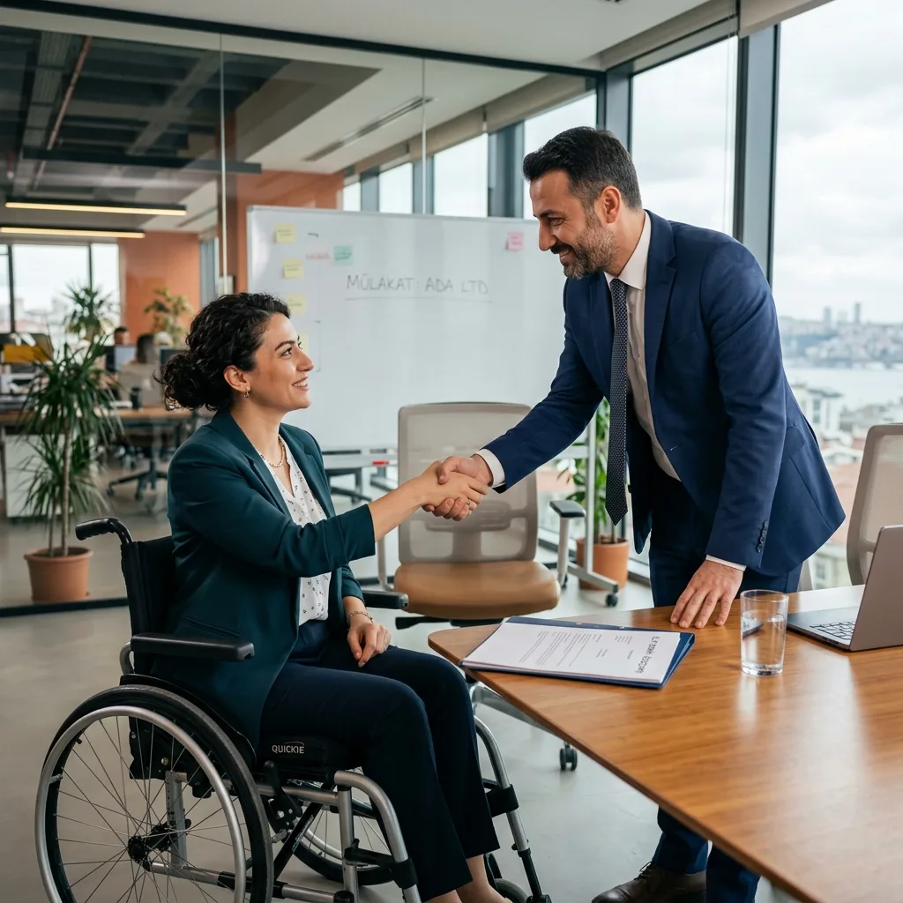
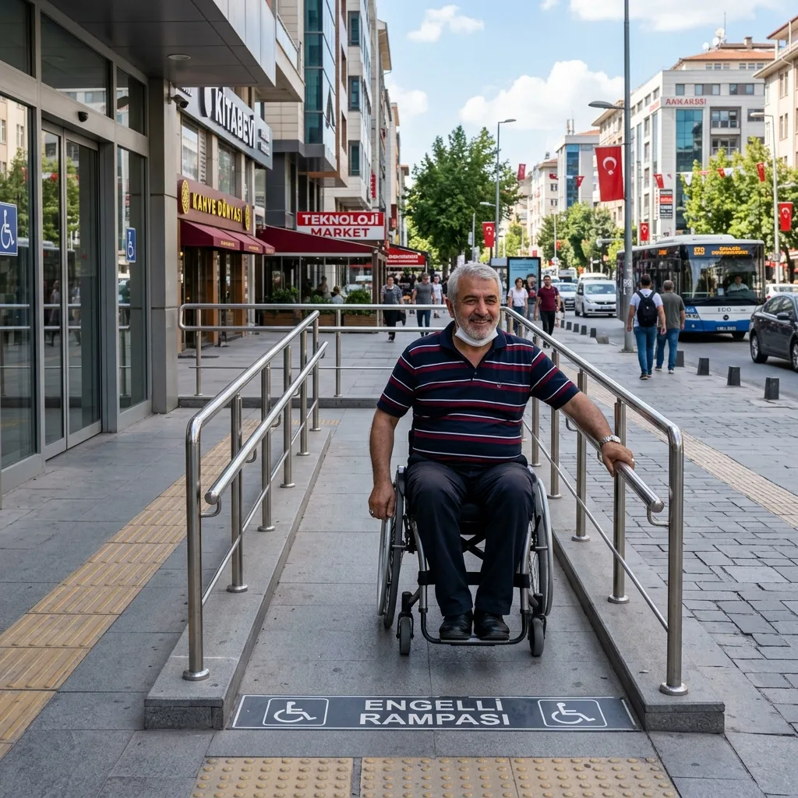
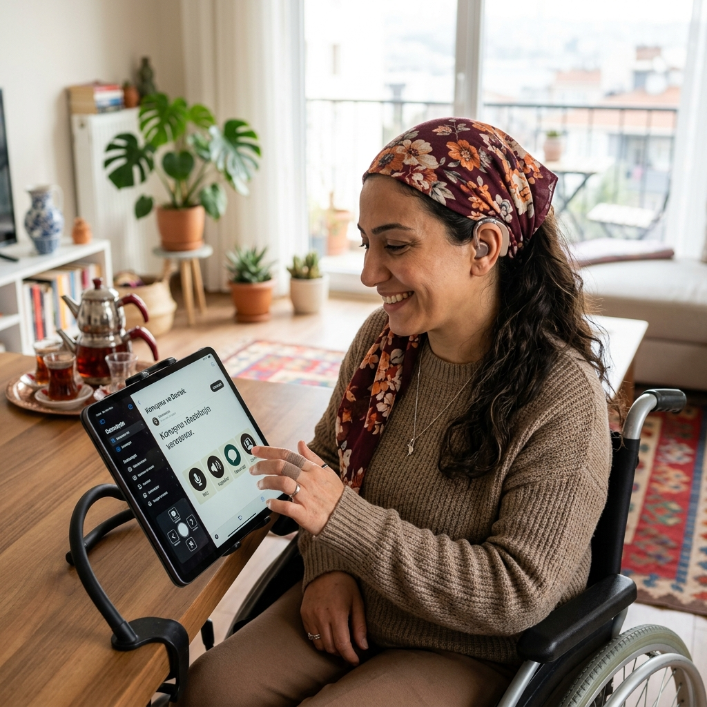
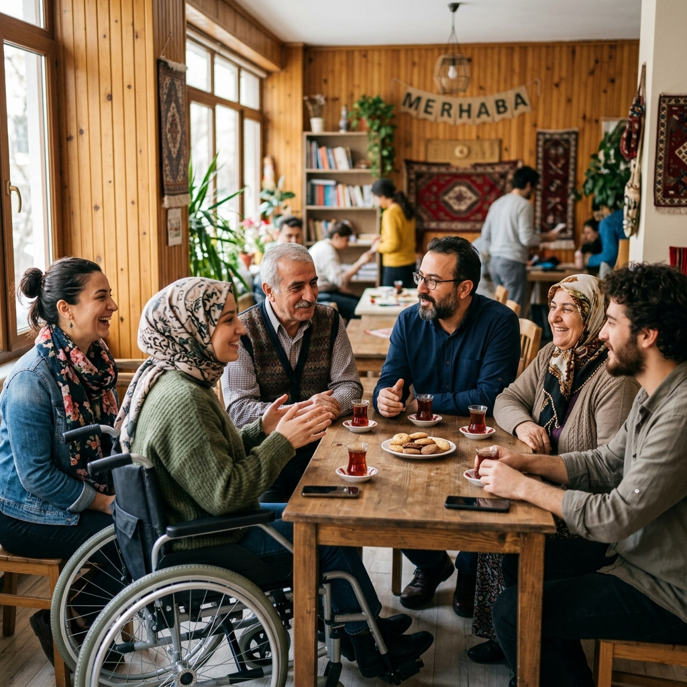
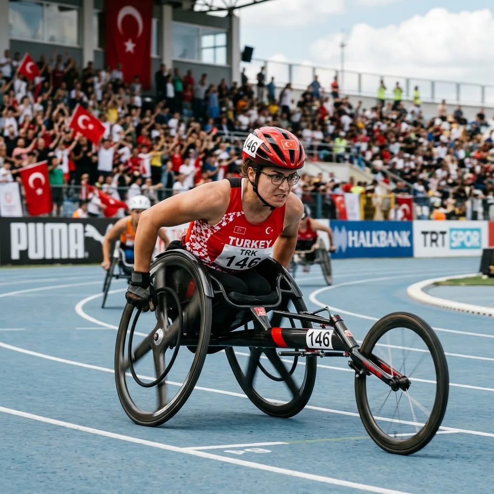

TeknolojiDijital Erişilebilirlik Nedir ve Neden Önemlidir?
Web sitelerinin ve uygulamaların engelli bireylerce engelsiz kullanımı, WCAG standartları ve dijital dünyadaki eşit haklar.
Erişilebilirlik, engelli hakları, teknoloji ve toplumsal yaşama dair bilgilendirici güncel makalelerimiz.

TeknolojiWeb sitelerinin ve uygulamaların engelli bireylerce engelsiz kullanımı, WCAG standartları ve dijital dünyadaki eşit haklar.

İstihdamKurumsal şirketlerde engelli istihdam politikaları, uzaktan çalışmanın sunduğu yeni fırsatlar ve engelsiz kariyer yolları.

Şehir & YaşamFiziksel çevre, kaldırımlar, rampalar, hissedilebilir yüzeyler ve akıllı şehir çözümlerinin engelsiz yaşama etkisi.

TeknolojiEkran okuyuculardan göz takip sistemlerine, akıllı protezlerden yapay zeka destekli görme teknolojilerine kadar yenilikçi araçlar.

Toplum & HaklarAcıma ve trajedi odaklı anlatımların dışına çıkarak, eşitliği, bağımsızlığı ve hak temelli yaklaşımı savunan doğru dil kullanımı.

Şehir & YaşamTürkiye'den ve dünyadan paralimpik şampiyonların başarı hikayeleri ve sporun engelsiz bireyler üzerindeki rehabilitasyon gücü.
Çalışmalarımıza destek olabilir, gönüllümüz ya da üyemiz olarak engelleri kaldırmada bir rol oynayabilirsiniz.
Hemen Bize Katılın